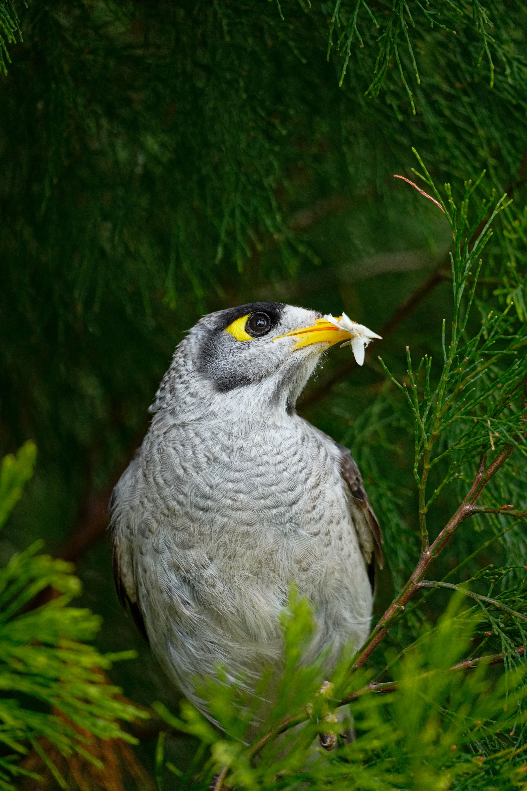

The Noisy Miner is a bold, highly social Australian honeyeater with a mostly grey body, black crown and cheeks, and a bright yellow bill and legs. Its name is extremely appropriate because colonies can produce a constant stream of loud calls. Noisy Miners are unusually aggressive toward other birds and may collectively mob much larger species such as hawks and kookaburras. They prefer open woodland and forests with relatively open understorey and have become common in parks, gardens and suburban areas. Despite the similar name, the Noisy Miner is completely unrelated to the introduced Common Myna, which belongs to the starling family.